、 、
译者
@SeanCheney ：
有了能做出惊人预测的模型之后
另外
本章我们会介绍如何部署模型
TensorFlow 模型服务化
训练好 TensorFlow 模型之后tf.keras模型predict()模型就成
使用 TensorFlow Serving
TF Serving 是一个非常高效
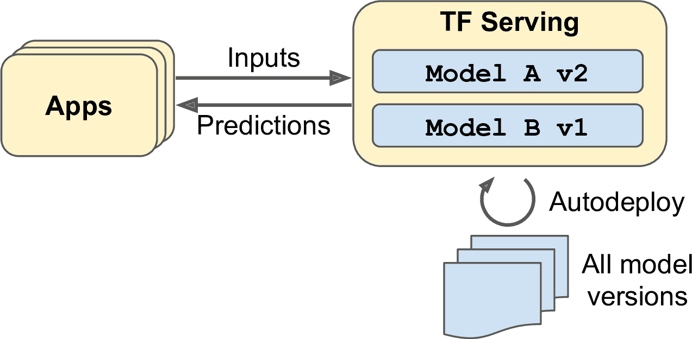
图 19-1 TF Serving 可以服务多个多个模型
假设你已经用tf.keras训练了一个 MNIST 模型
输出 SavedModel
TensorFlow 提供了简便的函数tf.saved_model.save()
model = keras.models.Sequential([...])
model.compile([...])
history = model.fit([...])
model_version = "0001"
model_name = "my_mnist_model"
model_path = os.path.join(model_name, model_version)
tf.saved_model.save(model, model_path)
通常将预处理层包含在最终模型里
警告
因为 SavedModel 保存了计算图 ： 所以只支持基于 TensorFlow 运算的模型 ， 不支持 ， tf.py_function()运算它包装了任意 Python 代码 （ ） 也不支持动态 。 tf.keras模型见附录 G （ ） 因为这些模型不能转换成计算图 ， 动态模型需要用其它工具 。 例如 （ Flask ， 服务化 ） 。
SavedModel 表示了模型版本saved_model.pb文件的目录assets子目录assets
my_mnist_model
└── 0001
├── assets
├── saved_model.pb
└── variables
├── variables.data-00000-of-00001
└── variables.index
可以使用函数tf.saved_model.load()加载 SavedModeltrainingFalse
saved_model = tf.saved_model.load(model_path)
y_pred = saved_model(X_new, training=False)
另外
inputs = keras.layers.Input(shape=...)
outputs = saved_model(inputs, training=False)
model = keras.models.Model(inputs=[inputs], outputs=[outputs])
y_pred = model.predict(X_new)
TensorFlow 还有一个命令行工具saved_model_cli
$ export ML_PATH="$HOME/ml" # point to this project, wherever it is
$ cd $ML_PATH
$ saved_model_cli show --dir my_mnist_model/0001 --all
MetaGraphDef with tag-set: 'serve' contains the following SignatureDefs:
signature_def['__saved_model_init_op']:
[...]
signature_def['serving_default']:
The given SavedModel SignatureDef contains the following input(s):
inputs['flatten_input'] tensor_info:
dtype: DT_FLOAT
shape: (-1, 28, 28)
name: serving_default_flatten_input:0
The given SavedModel SignatureDef contains the following output(s):
outputs['dense_1'] tensor_info:
dtype: DT_FLOAT
shape: (-1, 10)
name: StatefulPartitionedCall:0
Method name is: tensorflow/serving/predict
SavedModel 包含一个或多个元图"train"tf.keras模型传给函数tf.saved_model.save()"serve"__saved_model_init_opserving_defaulttf.keras模型时call()函数
saved_model_cli也可以用来做预测X_newnpy格式
np.save("my_mnist_tests.npy", X_new)
然后saved_model_cli命令
$ saved_model_cli run --dir my_mnist_model/0001 --tag_set serve \
--signature_def serving_default \
--inputs flatten_input=my_mnist_tests.npy
[...] Result for output key dense_1:
[[1.1739199e-04 1.1239604e-07 6.0210604e-04 [...] 3.9471846e-04]
[1.2294615e-03 2.9207937e-05 9.8599273e-01 [...] 1.1113169e-07]
[6.4066830e-05 9.6359509e-01 9.0598064e-03 [...] 4.2495009e-04]]
输出包含 3 个实例的 10 个类的概率
安装 TensorFlow Serving
有多种方式安装 TF Serving
$ docker pull tensorflow/serving
创建一个 Docker 容器运行镜像
$ docker run -it --rm -p 8500:8500 -p 8501:8501 \
-v "$ML_PATH/my_mnist_model:/models/my_mnist_model" \
-e MODEL_NAME=my_mnist_model \
tensorflow/serving
[...]
2019-06-01 [...] loaded servable version {name: my_mnist_model version: 1}
2019-06-01 [...] Running gRPC ModelServer at 0.0.0.0:8500 ...
2019-06-01 [...] Exporting HTTP/REST API at:localhost:8501 ...
[evhttp_server.cc : 237] RAW: Entering the event loop ...
这样
-it
使容器可交互Ctrl-C关闭
--rm
停止时删除容器
-p 8500:8500
将 Docker 引擎将主机的 TCP 端口 8500 转发到容器的 TCP 端口 8500
-p 8501:8501
将 Docker 引擎将主机的 TCP 端口 8501 转发到容器的 TCP 端口 8501
-v "$ML_PATH/my_mnist_model:/models/my_mnist_model"
使主机的$ML_PATH/my_mnist_model路径对容器的路径/models/mnist_model开放/替换为\
-e MODEL_NAME=my_mnist_model
将容器的MODEL_NAME环境变量/models查询
tensorflow/serving
镜像名
现在回到 Python 查询服务
用 REST API 查询 TF Serving
先创建查询
import json
input_data_json = json.dumps({
"signature_name": "serving_default",
"instances": X_new.tolist(),
})
注意X_newNumPy 数组要转换为 Python 列表
>>> input_data_json
'{"signature_name": "serving_default", "instances": [[[0.0, 0.0, 0.0, [...]
0.3294117647058824, 0.725490196078431, [...very long], 0.0, 0.0, 0.0, 0.0]]]}'
通过发送 HTTP POST 请求requests就成
import requests
SERVER_URL = 'http://localhost:8501/v1/models/my_mnist_model:predict'
response = requests.post(SERVER_URL, data=input_data_json)
response.raise_for_status() # raise an exception in case of error
response = response.json()
响应是一个字典"predictions"
>>> y_proba = np.array(response["predictions"])
>>> y_proba.round(2)
array([[0\. , 0\. , 0\. , 0\. , 0\. , 0\. , 0\. , 1\. , 0\. , 0\. ],
[0\. , 0\. , 0.99, 0.01, 0\. , 0\. , 0\. , 0\. , 0\. , 0\. ],
[0\. , 0.96, 0.01, 0\. , 0\. , 0\. , 0\. , 0.01, 0.01, 0\. ]])
现在就有预测了
REST API 既优雅又简单
提示
当传输大量数据时 ： ， 如果客户端支持 （ 最好使用 gRPC API ） 因为它是基于压缩二进制格式和高效通信协议 ， 基于 HTTP/2 框架 （ ） 。
用 gRPC API 查询 TF Serving
gRPC API 的输入是序列化的PredictRequest协议缓存PredictResponse协议缓存tensorflow-serving-api库的一部分
from tensorflow_serving.apis.predict_pb2 import PredictRequest
request = PredictRequest()
request.model_spec.name = model_name
request.model_spec.signature_name = "serving_default"
input_name = model.input_names[0]
request.inputs[input_name].CopyFrom(tf.make_tensor_proto(X_new))
这段代码创建了PredictRequest协议缓存Tensor协议缓存tf.make_tensor_proto()函数创建了一个基于给定张量或 NumPy 数组X_newTensor协议缓存grpcio库
import grpc
from tensorflow_serving.apis import prediction_service_pb2_grpc
channel = grpc.insecure_channel('localhost:8500')
predict_service = prediction_service_pb2_grpc.PredictionServiceStub(channel)
response = predict_service.Predict(request, timeout=10.0)
这段代码很简单localhost
然后PredictResponse协议缓存转换为张量
output_name = model.output_names[0]
outputs_proto = response.outputs[output_name]
y_proba = tf.make_ndarray(outputs_proto)
如果运行这段代码y_proba.numpy().round(2)
部署新模型版本
现在创建一个新版本模型my_mnist_model/0002
model = keras.models.Sequential([...])
model.compile([...])
history = model.fit([...])
model_version = "0002"
model_name = "my_mnist_model"
model_path = os.path.join(model_name, model_version)
tf.saved_model.save(model, model_path)
每隔一段时间
[...]
reserved resources to load servable {name: my_mnist_model version: 2}
[...]
Reading SavedModel from: /models/my_mnist_model/0002
Reading meta graph with tags { serve }
Successfully loaded servable version {name: my_mnist_model version: 2}
Quiescing servable version {name: my_mnist_model version: 1}
Done quiescing servable version {name: my_mnist_model version: 1}
Unloading servable version {name: my_mnist_model version: 1}
这个方法提供了平滑的过渡
可以看到my_mnist_model/0002 directory就能滚回到版本 1
提示
TF Serving 的另一个功能是自动批次化 ： 要使用的话 ， 可以在启动时使用选项 ， --enable_batching当 TF Serving 在短时间内收到多个请求时 。 延迟是可配置的 （ ） 可以自动做批次化 ， 然后再使用模型 ， 这样能利用 GPU 提升性能 。 模型返回预测之后 。 TF Serving 会将每个预测返回给正确的客户端 ， 通过提高批次延迟 。 见选项 （ --batching_parameters_file） 可以获得更高的吞吐量 ， 。
如果每秒想做尽量多的查询
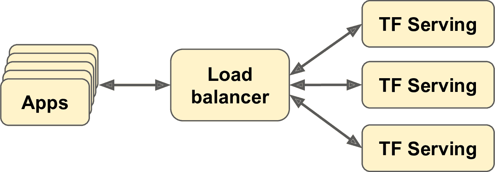
图 19-2 用负载均衡提升 TF Serving
现在
在 GCP AI 上创建预测服务
在部署模型之前
- 登录 Google 账户
， （ ） 。 ， 。
图 19-3 Google Cloud Platform 控制台
-
如果是第一次使用 GCP
， 、 。 ， ， ， 。 。 ， ， ： （ ） ， 。 ， 。 -
如果不能用试用账户
， 。 -
GCP 中的每个资源都属于一个项目
。 ， ， 。 ， ， My First Project。 。 IAM & admin → Settings， ， 。 。 ， ， 。 ， 。 ， New Project， 。
警告
不用时一定注意关掉所有服务 ： 否则跑几天或几个月 ， 可能花费巨大 ， 。
-
有了 GCP 账户和支付信息之后
， 。 ： ， ， 。 ， Storage → Browser。 。 Create Bucket， （ ） 。 ， machine-learning这样的名字， 。 ， 。 ， ， 。 ， ， 。 ， 。 Create。 -
上传之前创建的
my_mnist_model（ ） 。 ， ， ， my_mnist_model文件夹到 bucket 中（ ） 。 ， Upload folder， my_mnist_model文件夹。 ， ， 。
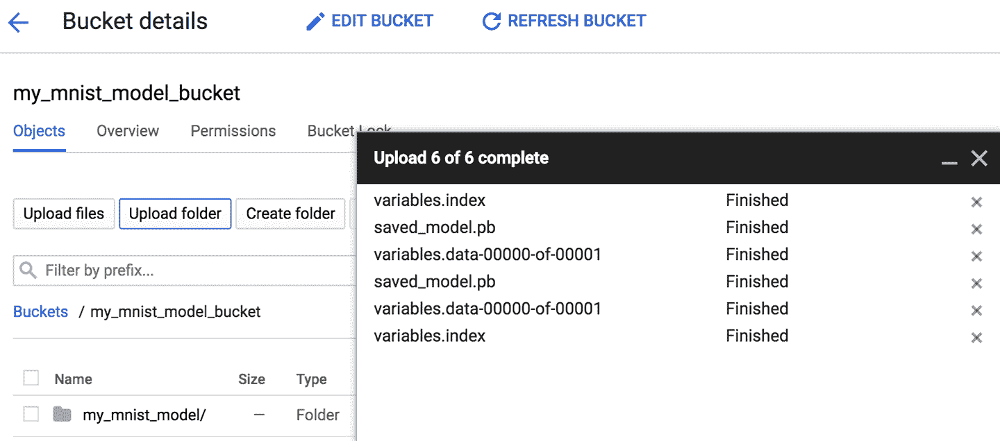
图 19-4 上传 SavedModel 到 Google Cloud Storage
- 配置 AI Platform
（ ） ， 。 ， Artificial Intelligence， AI Platform → Models。 Activate API（ ） ， Create model。 （ ） ， 。
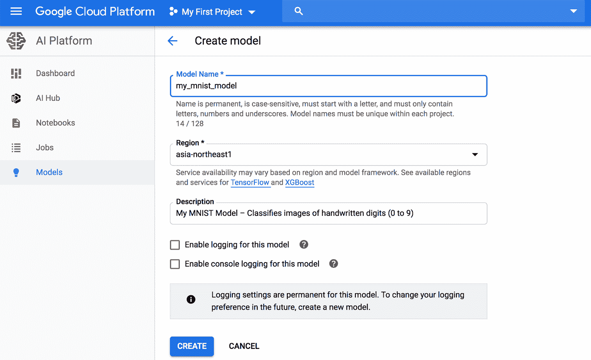
图 19-5 在 Google Cloud AI Platform 创建新模型
- AI Platform 有了模型
， 。 ， ， Create version， （ ） ： ， ， （ ） ， （ ） ， （ ， ） ， （ ， ） ， （ Single core CPU） ， （ ， ， gs://my-mnist-model-bucket/my_mnist_model/0002/） ， （ automatic） ， （ ） 。 Save。
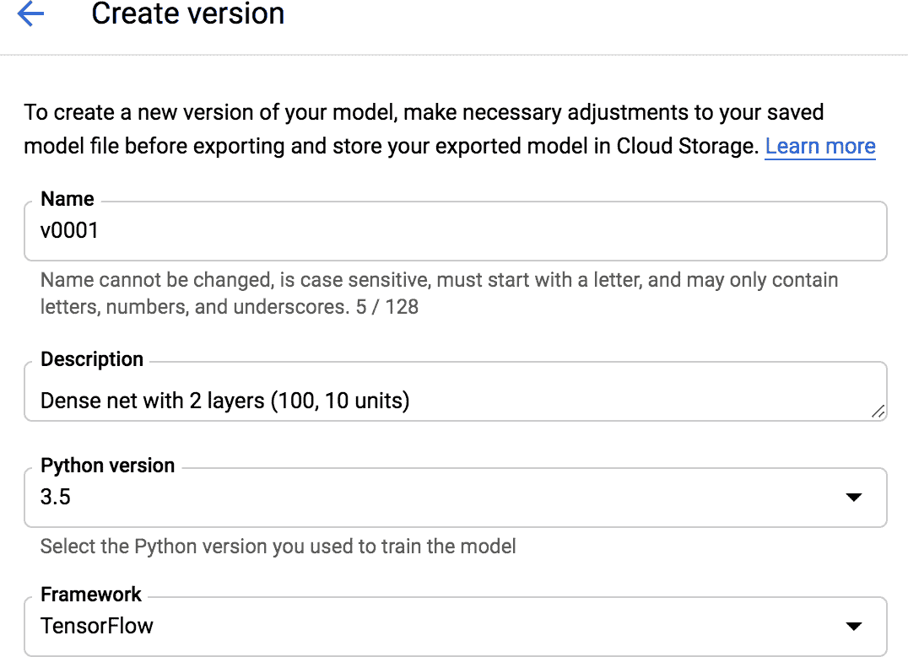
图 19-6 在 Google Cloud AI Platform 上创建一个新模型版本
恭喜
笔记
如果不使用预测服务 ： AI Platform 会停止所有容器 ， 这意味着 。 只用支付存储费用就成 ， 每月每 GB 几美分 （ ） 当查询服务时 。 AI Platform 会启动 TF Serving 容器 ， 启动需要几秒钟 ， 如果延迟太长 。 可以将最小容器数设为 1 ， 当然 。 这样花费会高 ， 。
现在查询预测服务
使用预测服务
在底层
-
应用
（ ， ） 。 ， 。 ， ， 。 ， ， （ ， ） 。 -
客户端代码可以用 service account 验证
。 ， 。 。 。
因此IAM & admin → Service accountsCreate Service AccountML Engine Developer角色Create KeyCreate
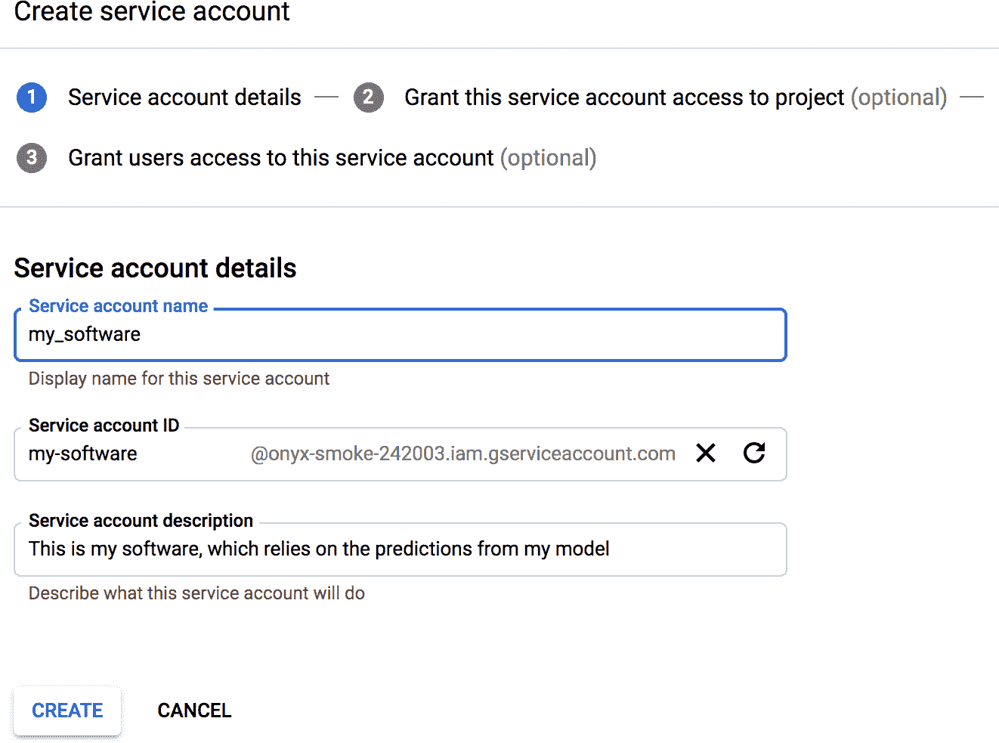
图 19-7 在 Google IAM 中创建一个新的服务账户
现在写一个小脚本来查询预测服务
Google API Client Library
- 基于 OAuth 2.0 和 REST
。 ， 。 ： google-api-python-client。
Google Cloud Client Libraries
- 稍高级的库
： ， 、 、 、 。 （ ， google-cloud-storage） 。 ， ， 。
在写作本书的时候GOOGLE_APPLICATION_CREDENTIALS环境参数就成
import os
os.environ["GOOGLE_APPLICATION_CREDENTIALS"] = "my_service_account_key.json"
笔记
如果将应用部署到 Google Cloud Engine (GCE)的虚拟机上 ： 或 Google Cloud Kubernetes Engine 的容器中 ， 或 Google Cloud App Engine 的网页应用上 ， 或者 Google Cloud Functions 的微服务 ， 如果没有设置 ， GOOGLE_APPLICATION_CREDENTIALS环境参数会使用默认的服务账户 ， 比如 （ 如果在 GCE 上运行应用 ， 就用默认 GCE 服务账户 ， ） 。
然后
import googleapiclient.discovery
project_id = "onyx-smoke-242003" # change this to your project ID
model_id = "my_mnist_model"
model_path = "projects/{}/models/{}".format(project_id, model_id)
ml_resource = googleapiclient.discovery.build("ml", "v1").projects()
可以将/versions/0001model_path
def predict(X):
input_data_json = {"signature_name": "serving_default",
"instances": X.tolist()}
request = ml_resource.predict(name=model_path, body=input_data_json)
response = request.execute()
if "error" in response:
raise RuntimeError(response["error"])
return np.array([pred[output_name] for pred in response["predictions"]])
这个函数接收包含图片的 NumPy 数组
>>> Y_probas = predict(X_new)
>>> np.round(Y_probas, 2)
array([[0\. , 0\. , 0\. , 0\. , 0\. , 0\. , 0\. , 1\. , 0\. , 0\. ],
[0\. , 0\. , 0.99, 0.01, 0\. , 0\. , 0\. , 0\. , 0\. , 0\. ],
[0\. , 0.96, 0.01, 0\. , 0\. , 0\. , 0\. , 0.01, 0.01, 0\. ]])
现在
如果将模型部署到移动 app
将模型嵌入到移动或嵌入式设备
如果需要将模型部署到移动或嵌入式设备上
-
减小模型大小
， ， 。 -
降低每次预测的计算量
， 、 。 -
针对设备具体限制调整模型
。
要降低模型大小.tflite文件
converter = tf.lite.TFLiteConverter.from_saved_model(saved_model_path)
tflite_model = converter.convert()
with open("converted_model.tflite", "wb") as f:
f.write(tflite_model)
提示
还可以使用 ： from_keras_model()将tf.keras模型直接转变为 FlatBuffer。
转换器还优化了模型3×a + 4×a + 5×a被压缩为(3 + 4 + 5)×a.pb文件.tflite模型
另一种减小模型的
TFLite 的转换器可以做的更好-m到+m固定到固定浮点
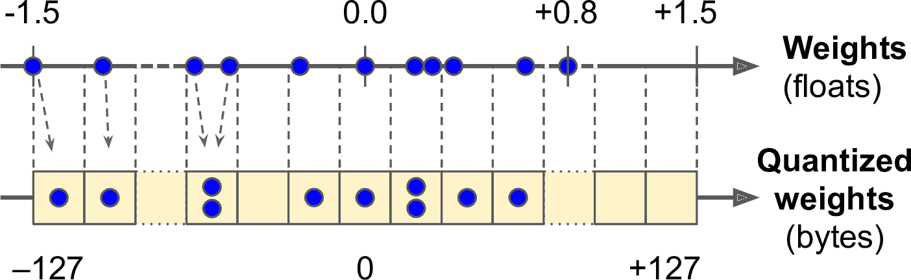
图 19-8 从 32 位浮点数到 8 位整数
要使用后训练量化convert()前OPTIMIZE_FOR_SIZE添加到转换器优化的列表中
converter.optimizations = [tf.lite.Optimize.OPTIMIZE_FOR_SIZE]
这种方法可以极大地减小模型
降低延迟和能量消耗的最高效的方法也是量化激活函数
量化最主要的问题是准确率的损失
解释过了 TFLite 的核心概念
浏览器中的 TensorFlow
如果想在网站中使用模型让用户直接在浏览器中使用 ， 该怎么做呢 ， 使用场景很多 ？ 如下 ， ：
- 用户连接是间断或缓慢的
所以在客户端一侧直接运行模型 ， 可以让网站更可靠 ， 。 - 如果想最快的获得响应
比如 （ 在线游戏 ， ） 在客户端做查询肯定能降低延迟 。 使网站响应更快 ， 。 - 当网站服务是基于一些用户隐私数据时
在客户端做预测可以使用户数据不出用户机器 ， 可以保护隐私 ， 。 对于所有这些情况
可以将模型输出为特殊格式 ， 用 TensorFlow.js js 库来加载 ， 这个库可以用模型直接在用户的浏览器运行 。 TensorFlow.js 项目包括工具 。 tensorflowjs_converter它可以将 SavedModel 或 Keras 模型文件转换为 TensorFlow.js Layers 格式 ， 这是一个路径包含了一组二进制格式的共享权重文件 ： 和文件 ， model.json它描述了模型架构和稳重文件的链接 ， 这个格式经过优化 。 可以快速在网页上下载 ， 用户可以用 TensorFlow.js 库下载模型并做预测 。 下面的代码片段是个例子 。 ： import * as tf from '@tensorflow/tfjs'; const model = await tf.loadLayersModel('https://example.com/tfjs/model.json'); const image = tf.fromPixels(webcamElement); const prediction = model.predict(image);TensorFlow.js 也是需要一本书来讲解
可以参考 。 Practical Deep Learning for Cloud, Mobile, and Edge 《 》
接下来
使用 GPU 加速计算
第 11 章
本节
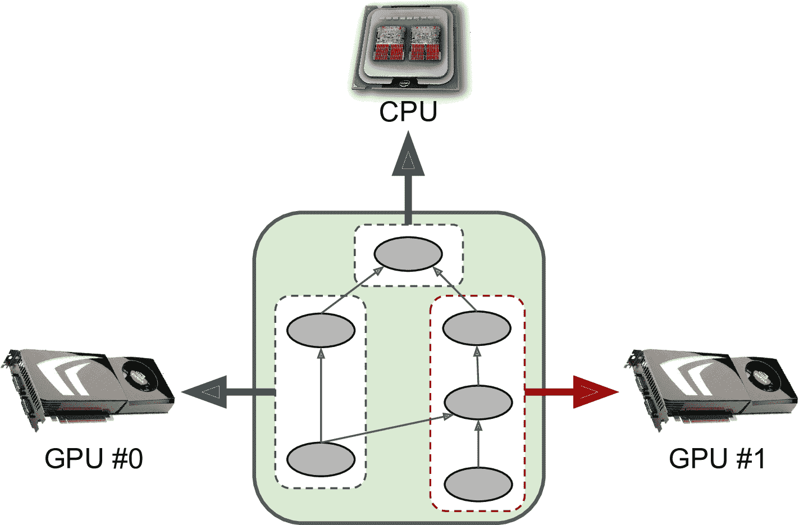
图 19-9 在多台设备上并行执行 TensorFlow 计算图
有了 GPU
提示
给电脑加上一块 GPU 显卡 ： 通常可以提升性能 ， 事实上 。 对于大多数情况 ， 这样就足够了 ， 根本不需要多台机器 ： 例如 。 因为网络通信延迟 ， 单台机器加 GPU 比多台机器加八块 GPU 同样快 ， 相似的 。 使用一块强大的 GPU 通常比极快性能一般的 GPU 要强 ， 。
首先
买 GPU
如果想买一快 GPU 显卡
如果买了 Nvidia 显卡
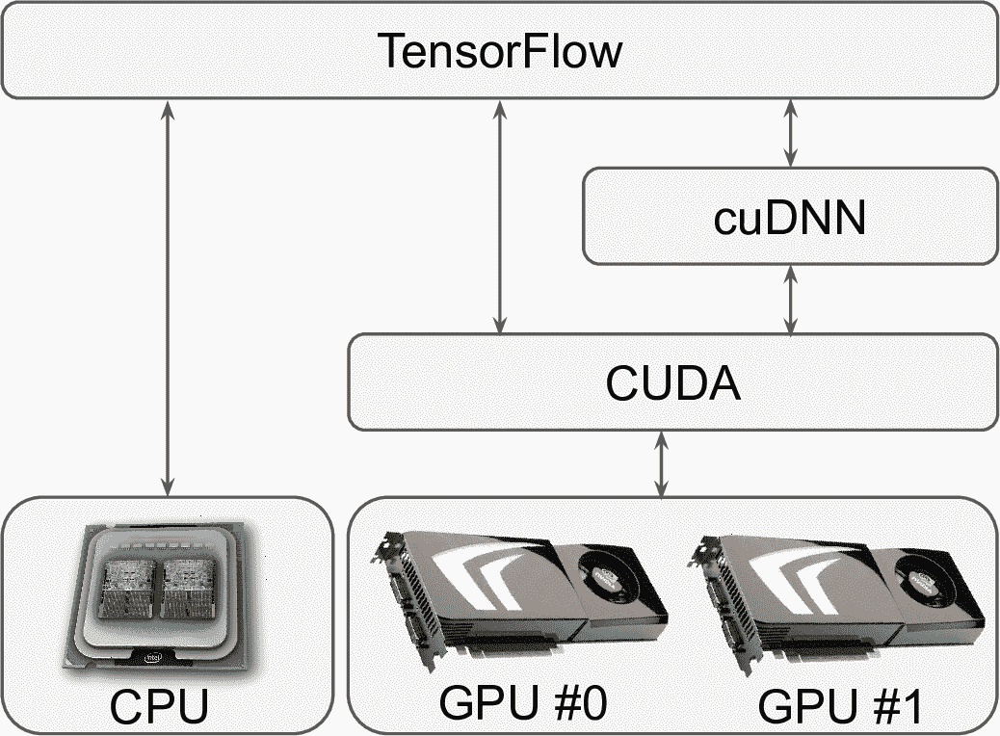
图 19-10 TensorFlow 使用 CUDA 和 cuDNN 控制 GPU
安装好 GPU 和需要的库之后nvidia-smi命令检测 CUDA 是否正确安装好
$ nvidia-smi
Sun Jun 2 10:05:22 2019
+-----------------------------------------------------------------------------+
| NVIDIA-SMI 418.67 Driver Version: 410.79 CUDA Version: 10.0 |
|-------------------------------+----------------------+----------------------+
| GPU Name Persistence-M| Bus-Id Disp.A | Volatile Uncorr. ECC |
| Fan Temp Perf Pwr:Usage/Cap| Memory-Usage | GPU-Util Compute M. |
|===============================+======================+======================|
| 0 Tesla T4 Off | 00000000:00:04.0 Off | 0 |
| N/A 61C P8 17W / 70W | 0MiB / 15079MiB | 0% Default |
+-------------------------------+----------------------+----------------------+
+-----------------------------------------------------------------------------+
| Processes: GPU Memory |
| GPU PID Type Process name Usage |
|=============================================================================|
| No running processes found |
+-----------------------------------------------------------------------------+
写作本书时tensorflow-gpu库
要检测 TensorFlow 是否连接 GPU
>>> import tensorflow as tf
>>> tf.test.is_gpu_available()
True
>>> tf.test.gpu_device_name()
'/device:GPU:0'
>>> tf.config.experimental.list_physical_devices(device_type='GPU')
[PhysicalDevice(name='/physical_device:GPU:0', device_type='GPU')]
is_gpu_available()检测是否有可用的 GPUgpu_device_name()给了第一个 GPU 名字list_physical_devices()返回了可用 GPU 设备的列表
现在
使用带有 GPU 的虚拟机
所有主流的云平台都提供 GPU 虚拟机IAM & admin → QuotasMetricNoneEdit quotasSubmit requestMetricNoneLocationNone解锁所有指标Edit quotas
GPU 额度请求通过后View ConsoleLaunch on Compute EngineInstall NVIDIA GPU driver automatically on first startupEnable access to JupyterLab via URL instead of SSHArtificial IntelligenceAI Platform → NotebooksRefresh刷新Open JupyterLab
如果你想快速测试或与同事分享笔记本
Colaboratory
使用 GPU VM 最简单便宜的方法是使用 Colaboratory
当你打开 Colab 笔记本Runtime → Change runtime typeHardware accelerator下拉栏选取 GPU
如果用同一个 Runtime 类型运行多个 Colab 笔记本
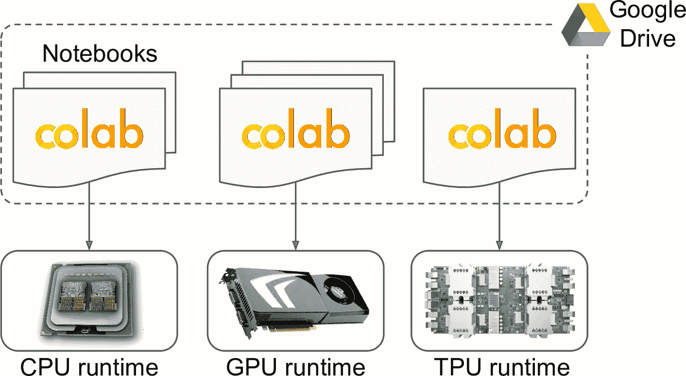
图 19-11 Colab Runtime 和笔记本
Colab 也有一些限制
管理 GPU 内存
TensorFlow 默认会在第一次计算时
如果机器上有多块 GPUCUDA_VISIBLE_DEVICES环境变量CUDA_DEVICE_ORDER环境变量为PCI_BUS_ID
$ CUDA_DEVICE_ORDER=PCI_BUS_ID CUDA_VISIBLE_DEVICES=0,1 python3 program_1.py
# and in another terminal:
$ CUDA_DEVICE_ORDER=PCI_BUS_ID CUDA_VISIBLE_DEVICES=3,2 python3 program_2.py
程序 1 能看到 GPU 卡 0 和 1/gpu:0 和 /gpu:1/gpu:1 和 /gpu:0os.environ["CUDA_DEVICE_ORDER"]和os.environ["CUDA_VISIBLE_DEVICES"]
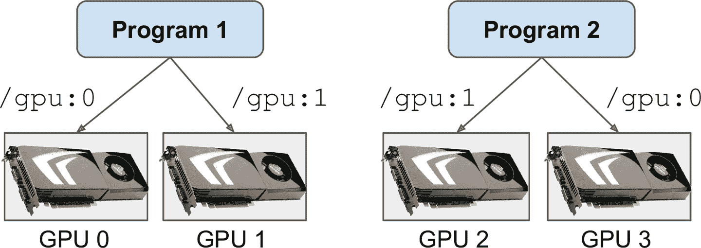
图 19-12 每个程序有两个 GPU
另一个方法是告诉 TensorFlow 使用具体量的 GPU 内存
for gpu in tf.config.experimental.list_physical_devices("GPU"):
tf.config.experimental.set_virtual_device_configuration(
gpu,
[tf.config.experimental.VirtualDeviceConfiguration(memory_limit=2048)])
现在
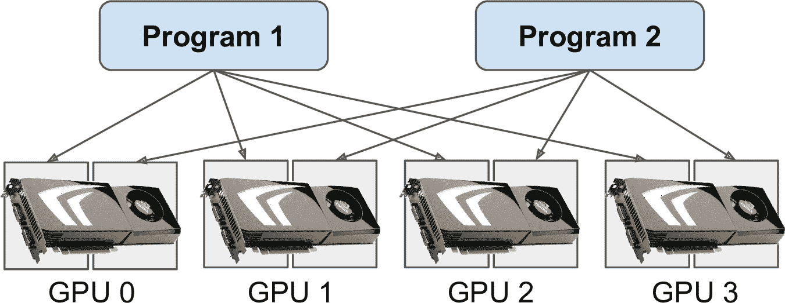
图 19-13 每个程序都可以使用 4 个 GPU
如果两个程序都运行时使用nvidia-smi命令
$ nvidia-smi
[...]
+-----------------------------------------------------------------------------+
| Processes: GPU Memory |
| GPU PID Type Process name Usage |
|=============================================================================|
| 0 2373 C /usr/bin/python3 2241MiB |
| 0 2533 C /usr/bin/python3 2241MiB |
| 1 2373 C /usr/bin/python3 2241MiB |
| 1 2533 C /usr/bin/python3 2241MiB |
[...]
另一种方法是让 TensorFlow 只在需要内存时再使用
for gpu in tf.config.experimental.list_physical_devices("GPU"):
tf.config.experimental.set_memory_growth(gpu, True)
另一种这么做的方法是设置环境变量TF_FORCE_GPU_ALLOW_GROWTH为trueTF_FORCE_GPU_ALLOW_GROWTH设为true
最后
physical_gpus = tf.config.experimental.list_physical_devices("GPU")
tf.config.experimental.set_virtual_device_configuration(
physical_gpus[0],
[tf.config.experimental.VirtualDeviceConfiguration(memory_limit=2048),
tf.config.experimental.VirtualDeviceConfiguration(memory_limit=2048)])
这两个虚拟 GPU 被称为/gpu:0 和 /gpu:1
在设备上安置运算和变量
TensorFlow 白皮书介绍了一种友好的动态安置器算法
但是tf.keras和tf.data通常可以很好地安置运算和变量
-
将预处理运算放到 CPU 上
， 。 -
GPU 的通信带宽通常不高
， 。 -
给机器添加更多 CPU 内存通常简单又便宜
， ： ， ， （ ， ） 。
默认下/gpu:0/cpu:0device告诉了它所在的设备
>>> a = tf.Variable(42.0)
>>> a.device
'/job:localhost/replica:0/task:0/device:GPU:0'
>>> b = tf.Variable(42)
>>> b.device
'/job:localhost/replica:0/task:0/device:CPU:0'
现在/job:localhost/replica:0/task:0
如果想把运算放到另一台非默认设备上tf.device()上下文
>>> with tf.device("/cpu:0"):
... c = tf.Variable(42.0)
...
>>> c.device
'/job:localhost/replica:0/task:0/device:CPU:0'
笔记
CPU 总是被当做单独的设备 ： （ /cpu:0） 即使你的电脑有多个 CPU 核 ， 如果有多线程核 。 任意安置在 CPU 上的运算都可以并行运行 ， 。
如果在不存在设备或没有核的设备安置运算和变量tf.device("/gpu:*")tf.config.set_soft_device_placement(True)
TensorFlow 是如何在多台设备上执行这些运算的呢
在多台设备上并行执行
第 12 章介绍过
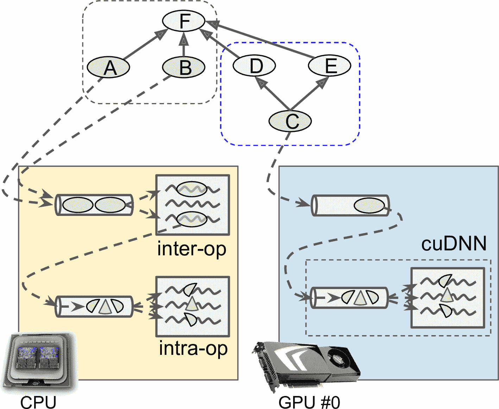
图 19-14 TensorFlow 计算图的并行执行
CPU 评估队列的运算被发送给称为inter-op的线程池intra-op的线程池
对于 GPUinter-op线程池
例如ABC是源运算A和B在 CPU 上inter-op线程池A有多线程核intra-op线程池内并行执行C进入 GPU 0 的计算队列intra-op线程池C最先完成D和E的依赖计数器下降为 0C只计算一次D和E依赖它B第二个结束F的依赖计数器从 4 降到 3ADE都完成F的依赖计数器降到 0
TensorFlow 的另一个奇妙的地方是当 TF 函数修改静态资源时v.assign_add(1)v.assign(v * 2)
提示
通过调用 ： tf.config.threading.set_inter_op_parallelism_threads()可以控制 ， inter-op线程池的线程数要设置 。 intra-op的线程数使用 ， tf.config.threading.set_intra_op_parallelism_threads()如果不想让 TensorFlow 占用所有的 CPU 核 。 或是只想单线程 ， 就可以这么设置 ， 。
有了上面这些知识
-
在独自的 GPU 上
， ： ， ， CUDA_DEVICE_ORDER和CUDA_VISIBLE_DEVICES， 。 ， 。 ， ， 。 -
在单 GPU 上训练模型
， ， prefetch()方法， 。 -
如果模型接收两张图片作为输入
， ， 。 -
创建高效的集成学习
： ， ， 。
如果想用多个 GPU 训练一个模型该怎么做呢
在多台设备上训练模型
有两种方法可以利用多台设备训练单一模型
模型并行
前面我们都是在单一设备上训练单一神经网络
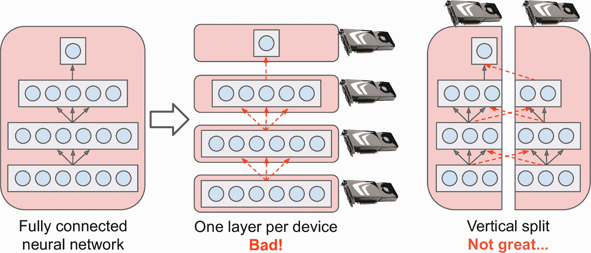
图 19-15 分割全连接神经网络
一些神经网络架构
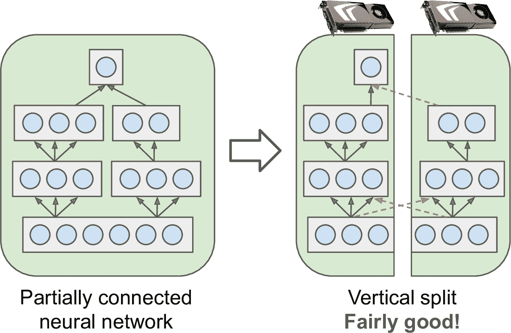
图 19-16 分割部分连接神经网络
深度循环神经网络更容易分割在多个 GPU 上
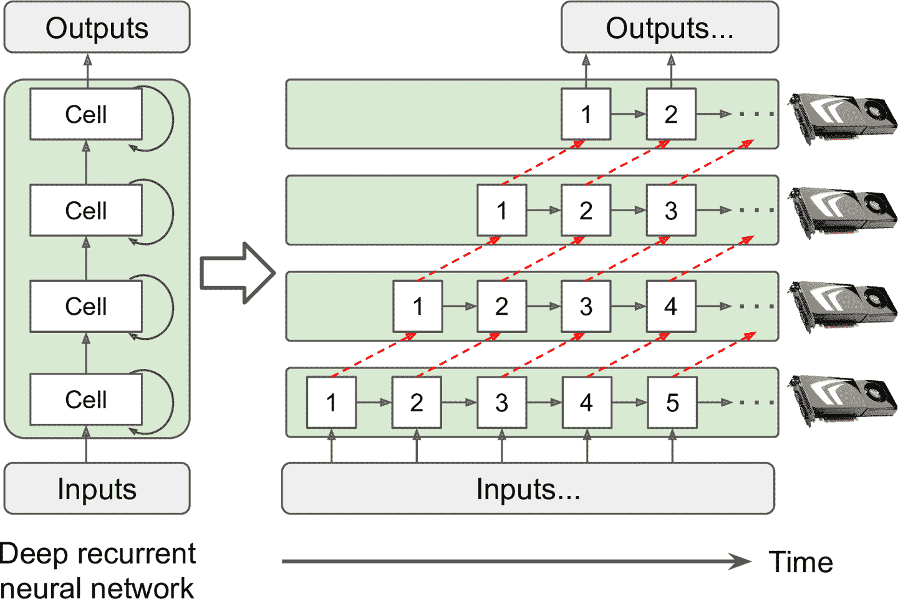
图 19-17 分割深度循环网络
总之
数据并行
另一种并行训练神经网络的方法
使用镜像策略做数据并行
可能最简单的方法是所有 GPU 上的模型参数完全镜像
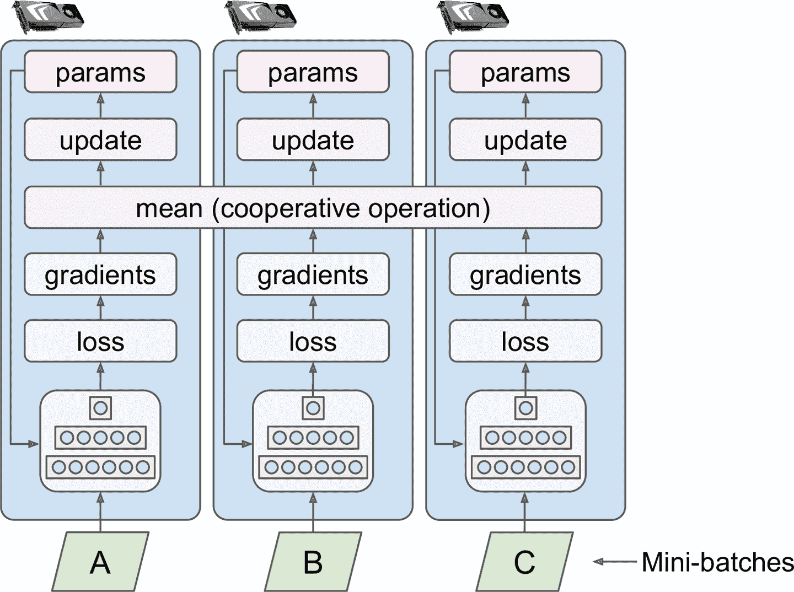
图 19-18 用镜像策略做数据并行
这种方法的麻烦之处是如何高效计算所有 GPU 的平均梯度
集中参数数据并行
另一种方法是将模型参数存储在做计算的 GPU
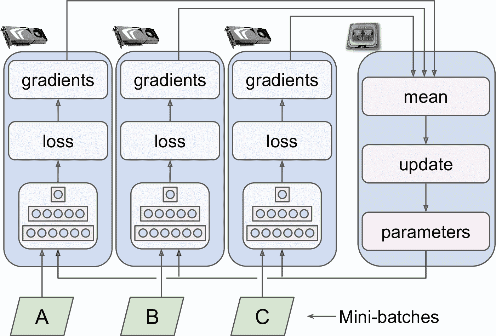
图 19-19 集中参数数据并行
镜像策略数据并行只能使用同步参数更新
同步更新
同步更新中
提示
要降低每步的等待时间 ： 可以忽略速度慢的模型复制的梯度 ， 大概~10% （ ） 例如 。 可以运行 20 个模型复制 ， 只累加最快的 18 个 ， 最慢的 2 个忽略 ， 参数更新好后 。 前 18 个复制就能立即工作 ， 不用等待 2 个最慢的 ， 这样的设置被描述为 18 个复制加 2 个闲置复制 。 。
异步更新
异步更新中
异步更新的数据并行是不错的方法N个复制N-1次
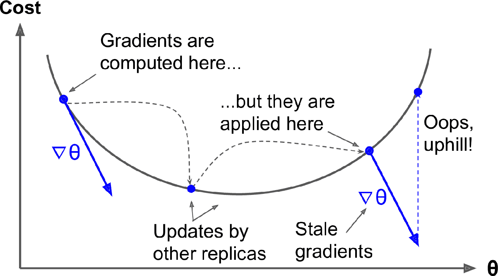
图 19-20 使用异步更新时会导致陈旧梯度
有几种方法可以减少陈旧梯度的坏处
-
降低学习率
。 -
丢弃陈旧梯度或使其变小
。 -
调整批次大小
。 -
只用一个复制进行前几个周期
（ ） 。 ， ， 。
Google Brain 团队在 2016 年发表了一篇论文
带宽饱和
无论使用同步还是异步更新
提示
对于一些相对小 ： 用大训练数据训练得到的模型 、 最好用单机大内存带宽单 GPU 训练 ， 。
带宽饱和对于大紧密模型更加严重
-
神经机器翻译
： ， -
Inception/ImageNet
： ， -
RankBrain
： ，
紧密模型使用几十块 GPU
同时tf.float32tf.bfloat16
下面就用多个 GPU 训练模型
使用 Distribution Strategies API 做规模训练
许多模型都可以用单一 GPU 或 CPU 来训练
幸好MirroredStrategyscope()方法fit()方法
distribution = tf.distribute.MirroredStrategy()
with distribution.scope():
mirrored_model = tf.keras.Sequential([...])
mirrored_model.compile([...])
batch_size = 100 # must be divisible by the number of replicas
history = mirrored_model.fit(X_train, y_train, epochs=10)
在底层tf.keras是分布式的MirroredStrategy上下文中fit()方法
训练好模型后predict()方法save()方法keras.models.load_model()
with distribution.scope():
mirrored_model = keras.models.load_model("my_mnist_model.h5")
如果只想使用 GPU 设备的一部分MirroredStrategy的构造器
distribution = tf.distribute.MirroredStrategy(["/gpu:0", "/gpu:1"])
默认时MirroredStrategy类使用 NVIDIA Collective Communications 库tf.distribute.HierarchicalCopyAllReduce类的实例tf.distribute.ReductionToOneDevice类的实例的cross_device_ops参数tf.distribute.NcclAllReduce
如果想用集中参数的数据并行MirroredStrategy替换为CentralStorageStrategy
distribution = tf.distribute.experimental.CentralStorageStrategy()
你还可以设置compute_devicesparameter_device
下面看看如何用 TensorFlow 集群训练模型
用 TensorFlow 集群训练模型
TensorFlow 集群是一组并行运行的 TensorFlow 进程"worker""chief""ps""evaluator"
-
每个工作器执行计算
， 。 -
chief也做计算， ， 。 chief。 chief， chief。 -
参数服务器只保留变量值的轨迹
， 。 ParameterServerStrategy。 -
评估器只做评估
。
要启动 TensorFlow 集群IP:port
cluster_spec = {
"worker": [
"machine-a.example.com:2222", # /job:worker/task:0
"machine-b.example.com:2222" # /job:worker/task:1
],
"ps": ["machine-a.example.com:2221"] # /job:ps/task:0
}
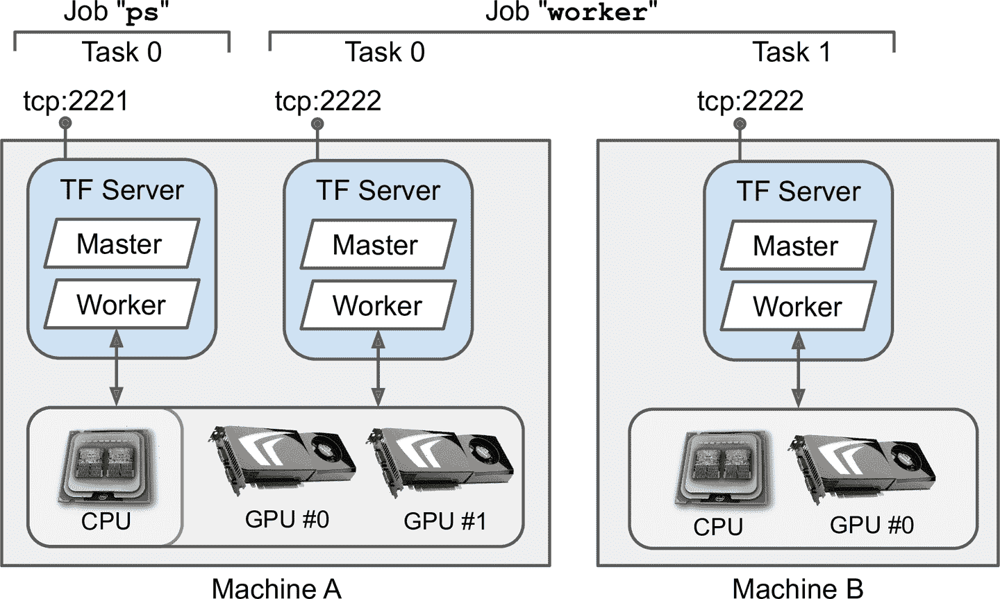
图 19-21 TensorFlow 集群
通常
警告
默认 ： 集群中的每个任务都可能与其它任务通信 ， 所以要配置好防火墙确保这些机器端口的通信 ， 如果每台机器用相同的端口 （ 就简单一些 ， ） 。
启动任务时TF_CONFIG"cluster"下"task"下TF_CONFIG使用了刚才定义的集群
import os
import json
os.environ["TF_CONFIG"] = json.dumps({
"cluster": cluster_spec,
"task": {"type": "worker", "index": 0}
})
提示
通常要在 Python 外面定义环境变量 ： TF_CONFIG代码不用包含当前任务的类型和索引 ， 这样可以让所有工作器使用相同的代码 （ ） 。
现在用集群训练一个模型TF_CONFIGps键
distribution = tf.distribute.experimental.MultiWorkerMirroredStrategy()
with distribution.scope():
mirrored_model = tf.keras.Sequential([...])
mirrored_model.compile([...])
batch_size = 100 # must be divisible by the number of replicas
history = mirrored_model.fit(X_train, y_train, epochs=10)
这就是前面用的代码MultiWorkerMirroredStrategyMirroredStrategy可能既处理单机又处理多机
你可以从两个 AllReduce 实现选择做分布策略CollectiveCommunication.RING或CollectiveCommunication.NCCLtf.distribute.experimental
如果想用带有参数服务器的异步数据并行ParameterServerStrategyTF_CONFIG
最后TPUStrategy
resolver = tf.distribute.cluster_resolver.TPUClusterResolver()
tf.tpu.experimental.initialize_tpu_system(resolver)
tpu_strategy = tf.distribute.experimental.TPUStrategy(resolver)
提示
如果是研究员 ： 可以免费试用 TPU ， 见这里 ， 。
现在就可以在多机多 GPU 训练模型了
在 Google Cloud AI Platform 上训练大任务
如果你想用 Google AI Platform
要启动任务gcloud
图 19-22 启动 Google Cloud Shell
如果想在自己机器上安装 SDKgcloud init启动gcloud命令可以使用 GCP 所有功能
运行训练任务之前ParameterServerStrategyTF_CONFIG
$ gcloud ai-platform jobs submit training my_job_20190531_164700 \
--region asia-southeast1 \
--scale-tier PREMIUM_1 \
--runtime-version 2.0 \
--python-version 3.5 \
--package-path /my_project/src/trainer \
--module-name trainer.task \
--staging-bucket gs://my-staging-bucket \
--job-dir gs://my-mnist-model-bucket/trained_model \
--
--my-extra-argument1 foo --my-extra-argument2 bar
浏览这些选项my_job_20190531_164700的训练任务asia-southeast1PREMIUM_1
/my_project/src/trainergcloud会自动绑定 PIP 包gs://my-staging-buckettrainer.task模块--job-dir和其它参数--后面的参数--job-dir在 GCS 上保存模型gs://my-mnist-model-bucket/trained_modelArtificial IntelligenceAI Platform → JobsView Logs
笔记
如果将训练数据放到 GCS 上 ： 可以创建 ， tf.data.TextLineDataset或tf.data.TFRecordDataset来访问用 GCS 路径作为文件名 ： 例如 （ ， gs://my-data-bucket/my_data_001.csv） 这些数据集依赖包 。 tf.io.gfile访问文件支持本地文件和 GCS 文件 ： 要保证服务账号可以使用 GCS （ ） 。
如果想探索几个超参数的值
在 AI Platform 上做黑盒超参数调节
AI Platform 提供了强大的贝叶斯优化超参数调节服务--config tuning.yaml
trainingInput:
hyperparameters:
goal: MAXIMIZE
hyperparameterMetricTag: accuracy
maxTrials: 10
maxParallelTrials: 2
params:
- parameterName: n_layers
type: INTEGER
minValue: 10
maxValue: 100
scaleType: UNIT_LINEAR_SCALE
- parameterName: momentum
type: DOUBLE
minValue: 0.1
maxValue: 1.0
scaleType: UNIT_LOG_SCALE
它告诉 AI Platform"accuracy"n_layersmomentumscaleType指明了先验UNIT_LINEAR_SCALE是扁平先验UNIT_LOG_SCALE的先验是最优值靠近最大值UNIT_REVERSE_LOG_SCALE
n_layers和momentum参数会作为命令行参数传给训练代码--job-dir指定"accuracy"概括的事件文件hyperparameterMetricTag指定的名字TensorBoard()调回
任务完成后AI Platform → Jobs page
笔记
AI Platform 还可以用于在大量数据上执行模型 ： 每个工作器从 GCS 读取部分数据 ： 做预测 ， 并保存在 GCS 上 ， 。
现在就可以用各种分布策略规模化创建先进的神经网络架构了
练习
-
SavedModel 包含什么
？ ？ -
什么时候使用 TF Serving
？ ？ ？ -
如何在多个 TF Serving 实例上部署模型
？ -
为什么使用 gRPC API 而不是 REST API
， ？ -
在移动和嵌入设备上运行
， ？ -
什么是伪量化训练
， ？ -
什么是模型并行和数据并行
？ ？ -
在多台服务器上训练模型时
， ？ ？ -
训练模型
（ ） ， 。 ， 。 ， 。 。 。 -
用一台机器多个 GPU
、 MirroredStrategy策略， （ ， ， ） 。 CentralStorageStrategy训练一次， 。 -
在 Google Cloud AI Platform 训练一个小模型
， 。
参考答案见附录 A